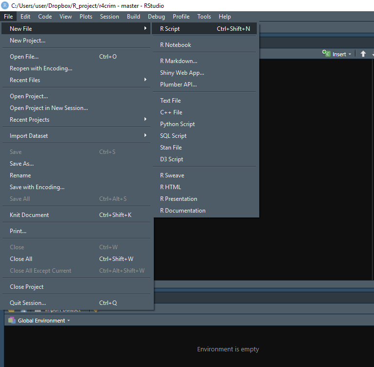
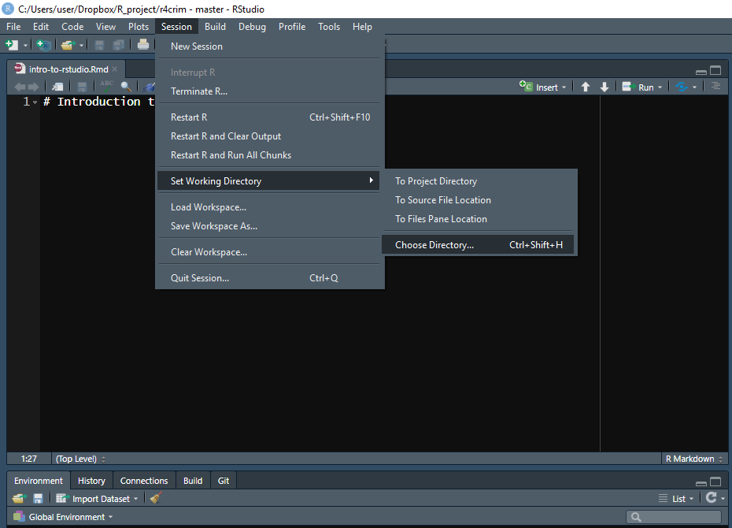
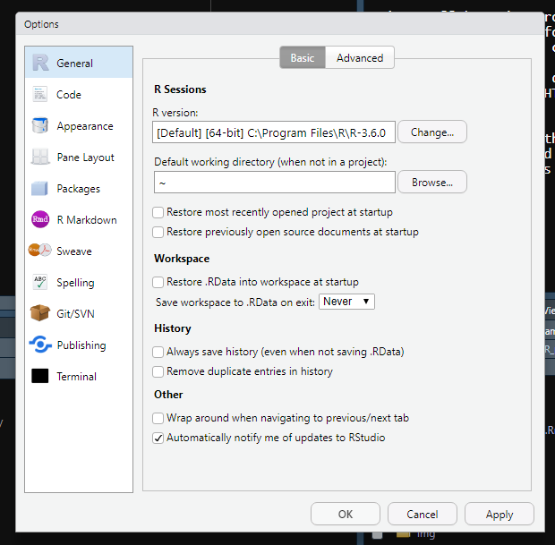
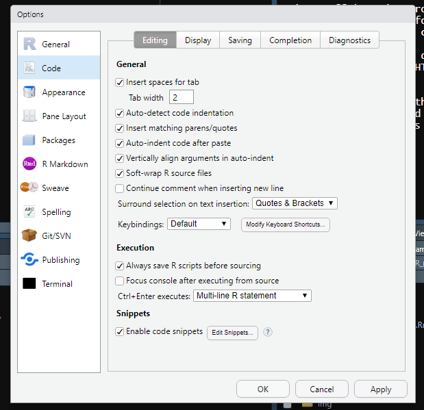
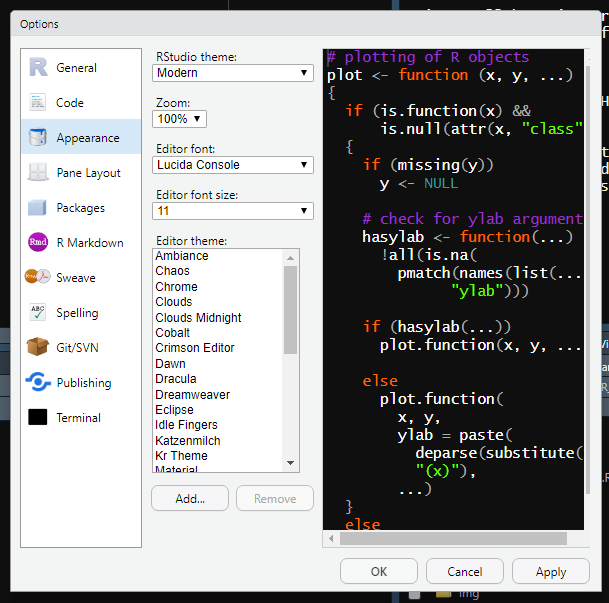
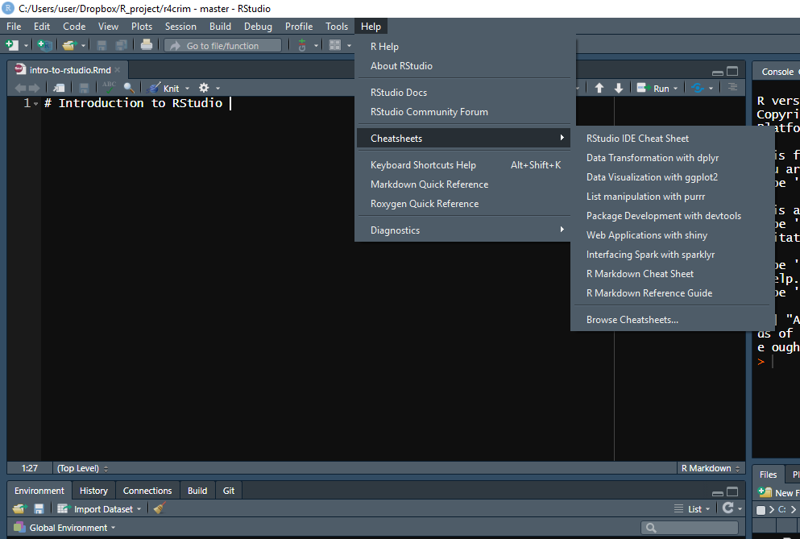
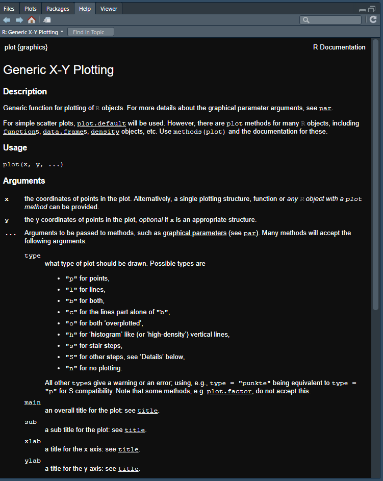

2 Introduction to R and RStudio
2.1 Using RStudio
In this lesson we’ll start by looking at RStudio then write some brief code to load in some crime data and start exploring it. This lesson will cover code that you won’t understand completely yet. That is fine, we’ll cover everything in more detail as the lessons progress.
RStudio is the interface we use to work with R. It has a number of features to make it easier for us to work with R - while not strictly necessary to use, most people who use R do so through RStudio. We’ll spend some time right now looking at RStudio and the options you can change to make it easier to use (and to suit your personal preferences with appearance) as this will make all of the work that we do in this book easier.
When you open up RStudio you’ll see four panels, each of which plays an important role in RStudio. Your RStudio may not look like the setup I have in the image below - that is fine, we’ll learn how to change the appearance of RStudio soon.

At the top right is the Console panel. Here you can write code, hit enter/return, and R will run that code. If you write 2+2 it will return (in this case that just mean it will print an answer) 4. This is useful for doing something simple like using R as a calculator or quickly looking at data. In most cases during research this is where you’d do something that you don’t care to keep. This is because when you restart R it won’t save anything written in the Console. To do reproducible research or to be able to collaborate with others you need a way to keep the code you’ve written.
The way to keep the code you’ve written in a file that you can open later or share with someone else is by writing code in an R Script (if you’re familiar with Stata, an R Script is just like a .do file). An R Script is essentially a text file (similar to a Word document) where you write code. To run code in an R Script just click on a line of code or highlight several lines and hit enter/return or click the “Run” button on the top right of the Source panel. You’ll see the lines of code run in the Console and any output (if your code has an output) will be shown there too (making a plot will be shown in a different panel as we’ll see soon).
For code that you don’t want to run, called comments, start the line with a pound sign # and that line will not be run (it will still print in the console if you run it but it won’t do anything). These comments should explain the code you wrote (if not otherwise obvious).
The Source panel is where the R Scripts will be and is located at the top left on the image below. It is good practice to do all of your code writing in an R Script - even if you delete some lines of code later - as it eliminates the possibility of losing code or forgetting what you wrote. Having all the code in front of you in a text file also makes it easier to understand the flow of code from start to finish to a task - an issue we’ll discuss more in later lessons.
While the Source and Console panels are the ones that are of most use, there are two other panels worth discussing. As these two panels let you interchange which tabs are available in them, we’ll return to them shortly in the discussion of the options RStudio has to customize it.
2.1.1 Opening an R Script
When you want to open up a new R Script you can click File on the very top left, then R Script. It will open up the script in a new tab inside of the Source panel. There are also a number of other file options available: R Presentation which can make PowerPoints, R Markdown which can make Word Documents or PDFs that incorporate R code used to make tables or graphs (and which we’ll cover in Chapter 21), and Shiny Web App to make websites using R. There is too much to cover for an introductory book such as this but keep in mind the wide capabilities of R if you have another task to do.

2.1.2 Setting the working directory
Many research projects incorporate data that someone else (such as the FBI or a local police agency) has put together. In these cases, we need to load the data into R to be able to use it. In a little bit we’ll load a data set into R and start working on it but let’s take a step back now and think about how to even load data. First, we’ll need to get the data onto our computer somehow, probably by downloading it from an agency’s website. Let’s be specific - we don’t download it to our computer, we download it to a specific folder on our computer (usually defaulted to the Downloads folder on a Windows machine). So let’s say you wanted to load a file called “data” into R. If you have a file called “data” in both your Desktop and your Downloads folder, R wouldn’t know which one you wanted. And unless your data was in the folder R searches by default (which may not be where the file is downloaded by default), R won’t know which file to load.
We need to tell R explicitly which folder has the data to load. We do this by setting the “Working Directory” (or the “Folders where I want you, R, to look for my data” in more simple terms). To set a working directory in R click the Session tab on the top menu, scroll to Set Working Directory, then click Choose Directory. This will open a window where you can navigate to the folder you want.

After clicking Open in that window you’ll see a new line of code in the Console starting with setwd() and inside of the parentheses is the route your computer takes to get to the folder you selected. And now R knows which folder to look in for the data you want. It is good form to start your R Script with setwd() to make sure you can load the data. Copy the line of code that says setwd() (which stands for “set working directory”), including everything in the parentheses, to your R Script when you start working.
2.1.3 Changing RStudio
Your RStudio looks different than my RStudio because I changed a number of settings to suit my preferences. To do so yourself click the Tools tab on the top menu and then click Global Options.

This opens up a window with a number of different tabs to change how R behaves and how it looks.
2.1.3.1 General
Under Workspace in the General tab make sure to uncheck the “Restore .RData into workspace at startup” and to set “Save workspace to .RData on exit:” to Never. What this does is make sure that every time you open R it starts fresh with no objects (essentially data loaded into R or made in R) from previous sessions. This may be annoying at times, especially when it comes to loading large files, but the benefits far outweigh the costs.
You want your code to run from start to finish without any errors. Something I’ve seen many students do is write some code in the Console (or in their R Script but out of order of how it should be run) to fix an issue with the data. This means their data is how it should be but when the R session restarts (such as if the computer restarts) they won’t be able to get back to that point. Making sure your code handles everything from start to finish is well-worth the avoided headache of trying to remember what code you did to fix the issue previously.

2.1.3.2 Code
The Code tab lets you specify how you want the code to be displayed. The important section for us is to make sure to check the “Soft-wrap R source files” check-box. If you write a very long line of code it gets too big to view all at once and you must scroll to the right to read it all. That can be annoying as you won’t be able to see all the code at once. Setting “Soft-wrap” makes it so if a line is too long it will just be shown on multiple lines which solves that issue. In practice it is best to avoid long lines of codes as it makes it hard to read but that isn’t always possible.

2.1.3.3 Appearance
The Appearance tab lets you change the background, color, and size of text. Change it to your preferences.

2.1.3.4 Pane Layout
The final tab we’ll look at is Pane Layout. This lets you move around the Source, Console, and the other two panels. There are a number of different tabs to select for the panels (unchecking one just moves it to the other panel, it doesn’t remove it from RStudio) and we’ll talk about three of them. The Environment tab shows every object you load into R or make in R. So if you load a file called “data” you can check the Environment tab. If it is there, you have loaded the file correctly.
As we’ll discuss more in Section 2.4, the Help tab will open up to show you a help page for a function you want more information on. The Plots tab will display any plot you make. It also keeps all plots you’ve made (until restarting R) so you can scroll through the plots.

2.1.4 Helpful Cheat Sheets
RStudio also includes a number of links to helpful cheat sheets for a few important topics. To get to it click Help, then Cheatsheets and click on whichever one you need.

2.2 Reading data into R
For many research projects you’ll have data produced by some outside group (FBI, local police agencies) and you want to take that data and put it inside R to work on it. We call that reading data into R. R is capable of reading a number of different formats of data which we will discuss in more detail in Chapter 8. Here, we will talk about the standard R data file only.
2.2.1 Loading data
As we learned above in Section 2.1.2, we need to set our working directory to the folder where the data is. For my own setup, R is already defaulted to the folder with this data so I do not need to set a working directory. For those following along on your own computer, make sure to set your working directory now.
The load() function lets us load data already in the R format. These files will end in the extension “.rda” or sometimes “.Rda” or “.RData.” Since we are telling R to load a specific file, we need to have that file name in quotes and include the file extension “.rda.” With R data, the object inside the data already has a name so we don’t need to assign (something we will discuss in detail in Section 5.2) a name to the data. With other forms of data such as .csv files we will need to do that as we’ll see in Chapter 8.
load("data/ucr2017.rda")2.3 First steps to exploring data
The object we loaded is called ucr2017. We’ll explore this data more thoroughly in the Chapter 6 but for now let’s use four simple (and important) functions to get a sense of what the data holds. For each of these functions write the name of the data set (without quotes since we don’t need quotes for an object already made in R) inside the ().
head()summary()plot()View()
Note that the first three functions are lowercase while View() is capitalized. That is simply because older functions in R were often capitalized while newer ones use all lowercase letters. R is case sensitive so using view() will not work.
The head() function prints the first 6 rows of each column of the data to the console. This is useful to get a quick glance at the data but has some important drawbacks. When using data with a large number of columns it can be quickly overwhelming by printing too much. There may also be differences in the first 6 rows with other rows. For example, if the rows are ordered chronologically (as is the case with most crime data) the first 6 rows will be the most recent. If data collection methods or the quality of collection changed over time, these 6 rows won’t be representative of the data.
head(ucr2017)
#> ori year agency_name state population actual_murder actual_rape_total
#> 1 AK00101 2017 anchorage alaska 296188 27 391
#> 2 AK00102 2017 fairbanks alaska 32937 10 24
#> 3 AK00103 2017 juneau alaska 32344 1 50
#> 4 AK00104 2017 ketchikan alaska 8230 1 19
#> 5 AK00105 2017 kodiak alaska 6198 0 15
#> 6 AK00106 2017 nome alaska 3829 0 7
#> actual_robbery_total actual_assault_aggravated
#> 1 778 2368
#> 2 40 131
#> 3 46 206
#> 4 0 14
#> 5 4 41
#> 6 0 52The summary() function gives a six number summary of each numeric or Date column in the data. For other types of data, such as “character” types (which are just columns with words rather than numbers or dates), it’ll say what type of data it is.
The six values it returns for numeric and Date columns are
- The minimum value
- The value at the 1st quartile
- The median value
- The mean value
- The value at the 3rd quartile
- The max value
- In cases where there are NAs, it will say how many NAs there are. An NA value is a missing value. Think of it like an empty cell in an Excel file. NA values will cause issues when doing math such as finding the mean of a column as R doesn’t know how to handle a NA value in these situations. We’ll learn how to deal with this later.
summary(ucr2017)
#> ori year agency_name state
#> Length:15764 Min. :2017 Length:15764 Length:15764
#> Class :character 1st Qu.:2017 Class :character Class :character
#> Mode :character Median :2017 Mode :character Mode :character
#> Mean :2017
#> 3rd Qu.:2017
#> Max. :2017
#> population actual_murder actual_rape_total actual_robbery_total
#> Min. : 0 Min. : 0.000 Min. : -2.000 Min. : -1.00
#> 1st Qu.: 914 1st Qu.: 0.000 1st Qu.: 0.000 1st Qu.: 0.00
#> Median : 4460 Median : 0.000 Median : 1.000 Median : 0.00
#> Mean : 19872 Mean : 1.069 Mean : 8.262 Mean : 19.85
#> 3rd Qu.: 15390 3rd Qu.: 0.000 3rd Qu.: 5.000 3rd Qu.: 4.00
#> Max. :8616333 Max. :653.000 Max. :2455.000 Max. :13995.00
#> actual_assault_aggravated
#> Min. : -1.00
#> 1st Qu.: 1.00
#> Median : 5.00
#> Mean : 49.98
#> 3rd Qu.: 21.00
#> Max. :29771.00The plot() function allows us to graph our data. For criminology research we generally want to make scatterplots to show the relationship between two numeric variables, time-series graphs to see how a variable (or variables) change over time, or barplots comparing categorical variables. Here we’ll make a scatterplot seeing the relationship between a city’s number of murders and their number of aggravated assaults (assault with a weapon or that causes serious bodily injury).
To do so we must specify which column is displayed on the x-axis and which one is displayed on the y-axis. In Section 5.5.1 we’ll talk explicitly about how to select specific columns from our data. For now, all you need to know is to select a column you write the data set name followed by dollar sign $ followed by the column name. Do not include any quotations or spaces (technically spaces can be included but make it a bit harder to read and are against conventional style when writing R code so we’ll exclude them). Inside of plot() we say that “x = ucr2017$actual_murder” so that column goes on the x-axis and “y = ucr2017$actual_assault_aggravated” so aggravated assault goes on the y-axis. And that’s all it takes to make a simple graph.
plot(x = ucr2017$actual_murder, y = ucr2017$actual_assault_aggravated)
Finally, View() opens essentially an Excel file of the data set you put inside the (). This allows you to look at the data as if it were in Excel and is a good way to start to understand the data.
View(ucr2017)2.4 Finding help about functions
If you are having trouble understanding what a function does or how to use it, you can ask R for help and it will open up a page explaining what the function does, what options it has, and examples of how to use it. To do so we write help(function) or ?function in the console and it will open up that function’s help page.
If we wrote help(plot) to figure out what the plot() function does, it will open up this page. For finding the help page of a function the parentheses (e.g. plot()) are optional.
